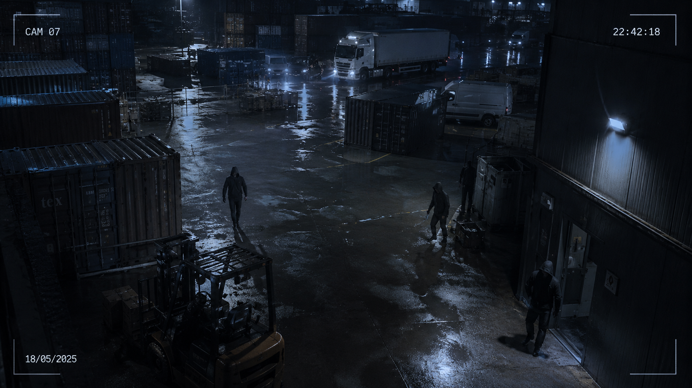
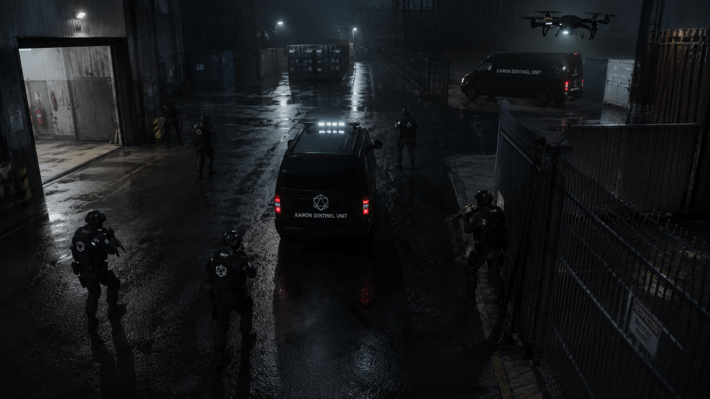
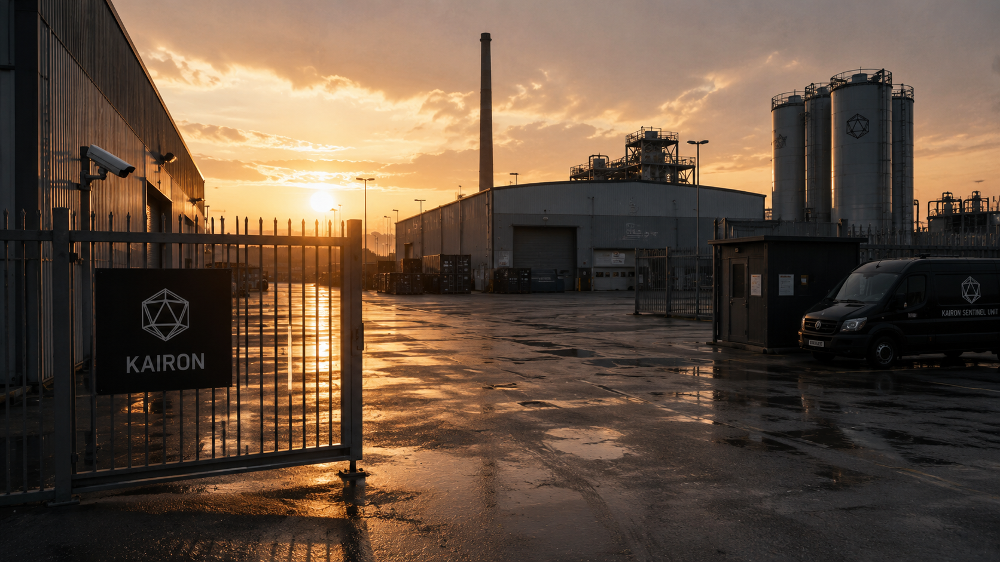

OP — 0041 / NORTH SEA
Overview
Operation Sentinel is an ongoing multi-jurisdictional security engagement protecting a critical energy infrastructure complex spanning three sovereign territories in the North Sea region. Kairon was contracted following a series of unexplained sabotage incidents attributed to state-aligned actors.
The client required a provider capable of operating seamlessly across multiple national legal jurisdictions while maintaining a unified command structure. Kairon's cross-border operational experience and established government liaison channels made it the preferred choice over twelve competing providers.


Methodology
A rotating Sentinel Unit of 14 operatives was deployed across offshore platforms and onshore processing facilities. The Cipher Division integrated drone surveillance networks, acoustic sensor arrays, and behavioural analytics platforms into a unified command picture with 24/7 monitoring from the Belfast operations centre.
Encrypted telemetry links between all field assets and the command centre ensured real-time situational awareness regardless of local communications disruptions. Rapid-reaction teams were pre-positioned within 20 minutes of all critical nodes.
Outcome
Zero security incidents since deployment. Two attempted perimeter intrusions detected and neutralised before escalation. Threat actor profiling has provided the client's security directorate with actionable intelligence leading to three formal law enforcement referrals.
Contract extended through Q4 2026. Client satisfaction assessed as exceptional across all contractual performance metrics. Kairon has been invited to tender for an expanded programme covering additional facilities.
